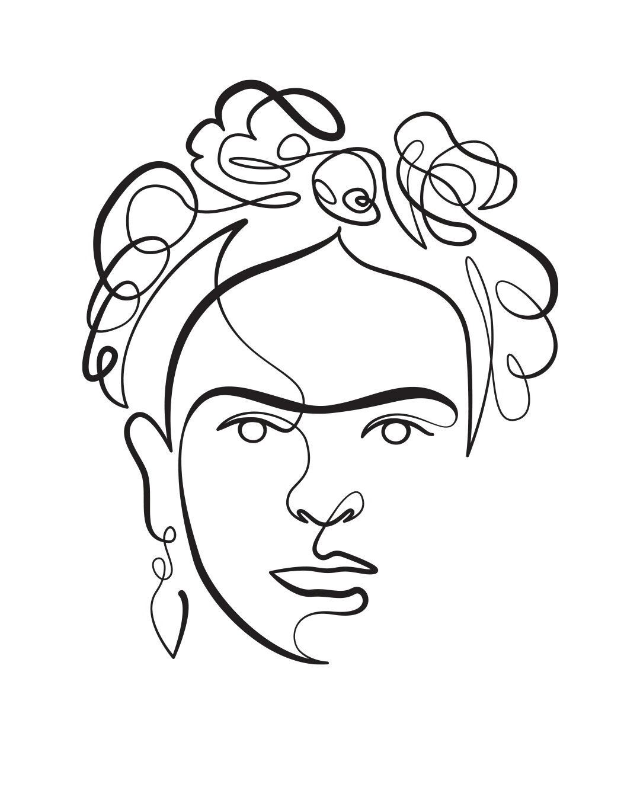

Este proyecto pertenece a (Copyright (c) 2023 Colégio Teresiano Rivera. All Rights Reserved.) [respectivamente 5to año], y consiste en hacer una galeria con fotos, história y datos sobre mujeres icónicas/históricas, como Joana d'Arc por ejemplo.

Frida Kahlo, antiprincesa alemana y méxicana.